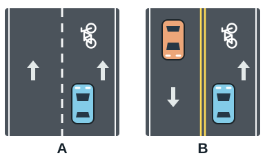

Use the handbook for exact state rules and final wording.
California DMV
California DMV Permit Practice Test
Practice California DMV permit topics with quick questions, original road-sign images, and a 40-question mock exam, then confirm the instruction permit, testing option, and document step on official DMV pages.
Last updated:
Source contextCalifornia Driver's Handbook
PrivacyAnswers stay in this browser
Quality checkOriginal practice questions
UpdatedNovember 24, 2026
Before test day
California DMV test-day path
Use this practice page, then finish with what to bring, official documents, road signs, mistakes, and visit logistics in one saved checklist.
ChecklistOpen California test-day checklistPlan ID, residency proof, forms, appointment, fees, signs, mistakes, and retake rules.
Road signs drillContinue practice loopMove between rules questions and image signs before the final review.
Official sourceCalifornia Driver's HandbookUse the official source for exact wording and final requirements.
California: change lanes, leave room, or wait?

A: You are behind a bicyclist in your lane. Could you stay in this lane just because you can leave 3 feet, even though a safe, legal lane change is available?
Change lanes before passing. When changing into an open same-direction lane is safe, practical and lawful, use that lane. A 3-foot gap does not replace that step. Leave safe space and move back only after clearing the bicyclist.
B: Oncoming traffic is approaching and you could leave only about 2 feet. Does slowing down make this pass a good choice?
No. Wait behind the bicyclist. The California DMV handbook advises giving at least 3 feet when you cannot change lanes and waiting if you cannot give that much room. Once the oncoming car has passed, recheck both clearance and whether the pass is legal and safe.
Later you have 3 feet of room, but parked car doors and rough pavement could force the bicyclist sideways. Is the gap alone enough?
No. Three feet is not a guarantee that it is safe to pass. Judge from the closest part of your vehicle, including a mirror, and allow room for the bicyclist to avoid hazards. Keep following at a safe distance if you cannot provide enough room.
California DMV handbook: Passing a Bicyclist · California Highway Patrol FAQ: Bicycle passing and Vehicle Code 21760
California exam snapshot
California permit practice that matches the way people study
Before you start, use this snapshot to confirm the handbook source, the practice target, and the best order for using each mode.
This site uses an 80% practice benchmark for the full mock mode.
Missed categories tell you which handbook section to reread.
Answers are not sent to a server or saved to a profile.
- 1Scan the handbook
Read signs, right of way, lane markings, speed, parking, and alcohol rules first.
- 2Run quick practice
Use the 15-question mode to find obvious gaps without spending too long.
- 3Drill image signs
Switch to Road Signs when visual recognition feels slow or uncertain.
- 4Finish with mock exam
Use the 40-question mode only after reading explanations from missed questions.
Practice one question without the interactive quiz
The quiz has not loaded. This example is from the same practice set and is not scored.
If a school bus ahead has flashing red lights, the safest general response is to:
In California, you are following the stopped bus on the same side of the road. There is another lane going your way.
- Stop as required and watch for children
- Pass quickly before children step out
- Move into the left lane and keep driving
Check the answer
Stop as required and watch for children
Come to a full stop before reaching the bus. Do not use the other lane to pass. Wait until the red lights stop flashing and children are clear. California's exception for a bus on the opposite side of a divided or qualifying multilane highway does not apply when you are following it.
DMV practice engine
Choose a practice mode
Use a mixed round to practice signs and driving rules, or use the signs round to work on recognition alone.
1. Answer
2. Read explanation
3. Review saved mistakes
4. Retake weak topics
- Quick PracticeA focused 15-question round for signs, right of way, lane rules, and safe driving basics.
- Road SignsImage-based sign recognition using original SVG road sign illustrations.
- Mock ExamA longer mixed review for rules, signs, parking, road conditions, and emergencies.
Interactive practice
California quick practice
A focused 15-question round for signs, right of way, lane rules, and safe driving basics.
1. When approaching a stop sign, what should you do?
2. If a traffic signal is not working, you should usually treat the intersection as:
3. A solid yellow line on your side of the road generally means:
4. What is the safest response when an emergency vehicle approaches with lights and siren?
5. Before changing lanes, you should:
6. When driving in fog, which choice is usually safest?
7. A pedestrian is crossing at an unmarked crosswalk at an intersection. You should:
8. What does a red curb usually mean?
9. If your vehicle begins to hydroplane, what should you do first?
10. At night, you should dim high beams when approaching another vehicle because:
11. If a school bus ahead has flashing red lights, the safest general response is to:
In California, you are following the stopped bus on the same side of the road. There is another lane going your way.
12. Which choice best describes defensive driving?
13. When parking uphill with a curb, your front wheels should generally be turned:
14. What should you do if another driver is tailgating you?
15. Before entering a roundabout, you should:
Interactive practice
California road signs image test
Image-based sign recognition using original SVG road sign illustrations.
1. What does this sign mean?
2. What should a driver do at this sign?
3. This sign tells drivers that:
4. What is the safest meaning of this sign?
5. What action is prohibited by this sign?
6. This sign indicates:
7. What does this sign set?
8. What should you expect near this sign?
9. This sign warns drivers to watch for:
10. What road situation does this sign warn about?
11. This sign means:
12. What hazard does this sign warn about?
13. This sign marks or warns of:
14. What does this orange sign usually mean?
15. This sign warns that ahead there is:
16. What does this sign warn about?
17. This sign means drivers should not:
18. This sign warns drivers about:
19. What service does this blue sign identify?
20. This sign warns drivers to watch for:
21. What does this regulatory sign prohibit?
22. What should a driver do at this sign?
23. This sign warns that:
24. What road condition is ahead?
25. What should you prepare for at this sign?
26. This sign warns of:
27. What intersection shape is shown?
28. What does this sign tell a driver to do?
Interactive practice
California full mock exam
A longer mixed review for rules, signs, parking, road conditions, and emergencies.
1. When approaching a stop sign, what should you do?
2. If a traffic signal is not working, you should usually treat the intersection as:
3. A solid yellow line on your side of the road generally means:
4. What is the safest response when an emergency vehicle approaches with lights and siren?
5. Before changing lanes, you should:
6. When driving in fog, which choice is usually safest?
7. A pedestrian is crossing at an unmarked crosswalk at an intersection. You should:
8. What does a red curb usually mean?
9. If your vehicle begins to hydroplane, what should you do first?
10. At night, you should dim high beams when approaching another vehicle because:
11. If a school bus ahead has flashing red lights, the safest general response is to:
In California, you are following the stopped bus on the same side of the road. There is another lane going your way.
12. Which choice best describes defensive driving?
13. When parking uphill with a curb, your front wheels should generally be turned:
14. What should you do if another driver is tailgating you?
15. Before entering a roundabout, you should:
16. If you are driving slower than other traffic on a multilane road, which lane is usually safest?
17. When a traffic officer directs you against a traffic signal, you should:
18. What is the safest action before entering a freeway from an on-ramp?
19. A driver under 21 in California should understand that alcohol rules are:
20. If your brakes get wet after driving through deep water, what should you do?
21. When passing a bicyclist, you should:
22. If a tire blows out, what should you do first?
23. What should you do before turning left at an intersection with oncoming traffic?
24. When you see a flagger in a work zone, you should:
25. A safe following distance should be increased when:
26. If you are blinded by oncoming headlights at night, you should:
27. When parking downhill with a curb, front wheels should generally point:
28. What should you do if your vehicle starts to skid?
29. If you approach a school zone during posted hours, you should:
30. Before opening a door next to traffic, drivers and passengers should:
31. If an animal suddenly runs into the road, the safest general response is to:
32. What should you do at a crosswalk where another vehicle has stopped?
33. A center two-way left-turn lane is generally used for:
34. If your vehicle stalls on railroad tracks and a train is coming, you should:
35. When driving near large trucks, remember that trucks:
36. If you are being passed by another vehicle, you should:
37. What should you do before backing up?
38. At a green light, you should still:
39. If a lane is marked with a diamond symbol, it often means:
40. If your windshield wipers are needed because of weather, you should also think about:
Real test details
California knowledge test and practice scores
The California DMV passing rule and the benchmark for this site's 40-question round are separate, even though both use 80%.
California DMV states that learner-permit knowledge tests use an 80% passing score. Check your application path for the exact test format.
Use the handbook and DMV sample tests for final wording.
Start your application with California DMV and follow its testing instructions. Only eligible Class C renewals can use eLearning.
This site's mixed mock exam uses an 80% practice benchmark.
Practice by topic
California permit topics to study after each quiz
If your misses involve both signs and parking, start with the curb-color checkpoint. If they involve yielding or intersections, choose right of way instead.
California: Recognize signs by shape, color, and driver action before memorizing answer choices.
Review sign libraryCalifornia: Practice who yields at four-way stops, left turns, pedestrians, emergency vehicles, and roundabouts.
Review missed yield questionsCalifornia: Connect posted limits with weather, visibility, school zones, and stopping distance.
Review speed questionsCalifornia: Study signals, turn lanes, yellow lights, protected turns, and lane positioning.
Review signal questionsCalifornia: Check curb colors, hills, no-parking zones, and safe door-opening habits.
Review parking tableCalifornia: Practice fog, rain, hydroplaning, icy roads, skids, and headlight choices.
Review road conditionsCalifornia: Watch for vulnerable road users and rules that require slowing or stopping.
Review sharing the roadCalifornia: Know why impairment and distraction affect judgment, reaction time, and legal risk.
Review safety rules
Road sign study guide
California mixed-round review: parking and curbs
If a parking question confused you, name the curb color and say what you may do there. Then check the posted signs: the color is only the first clue.
Road sign library
Road signs to recognize before test day
Use this as a mini sign manual before or after the image quiz. The drawings are original study illustrations, not copied official test images.
Regulatory and control
These signs tell you what you must do or what is prohibited.
Stop
Come to a complete stop before the line, crosswalk, or intersection.
Yield
Slow and let traffic or pedestrians with the right of way go first.
Do Not Enter
Do not drive into that road, ramp, or lane.
Wrong Way
You are traveling against the allowed direction. Pull over when you can do so safely; the sign does not authorize a U-turn.
One Way
Traffic flows only in the arrow direction.
No U-Turn
Do not turn around at this location.
All-Way Stop
Stop completely. ALL WAY means every approach stops; follow right-of-way rules.
No Right Turn
Do not make a right turn where this sign is posted.
No Turn on Red
Do not turn while the signal is red, even after stopping.
Keep Right
Stay to the right of the island, divider, or obstruction.
Warning signs
Yellow warning signs give advance notice so you can slow or change position before the hazard.
Pedestrian Crossing
Watch for people crossing and be ready to stop.
Merge
Traffic streams join; adjust speed and spacing.
Lane Ends
An existing lane ends ahead. Follow posted directions and lane markings; merge when safe.
Slippery When Wet
Reduce speed and avoid hard braking or sharp steering.
Signal Ahead
A traffic signal is ahead; prepare to stop.
Divided Highway
A physical median or barrier will separate opposing traffic ahead.
School, rail, and work zones
These signs often require extra scanning because children, workers, tracks, or temporary lane changes may be nearby.
School Crossing
Look for children and obey school-zone speed or stop rules.
Railroad Crossing
Never stop on tracks; obey gates, lights, and crossbucks.
Work Zone
Expect workers, cones, flaggers, lane shifts, and slower traffic.
Roundabout
Yield before entering and follow the circular traffic flow.
Animal Crossing
Scan the roadside and slow when animals may enter the road.
Hospital
A hospital or emergency medical facility is nearby.
Quick facts
- Practice modes
- Quick, road signs, and mock exam
- Practice target
- 32 of 40 on the mock exam
- Road sign images
- 28 original SVG sign prompts
- Official source
- California Driver's Handbook
California practice score interpretation
| Practice result | What it means | Next study move |
|---|---|---|
| 13-15 correct | Strong practice result for this short quiz. | Review any missed category, then reread the handbook sections you guessed on. |
| 10-12 correct | Good start, but a few rule areas need reinforcement. | Repeat the quiz later and focus on signs, right of way, and safe following distance. |
| 7-9 correct | You know some basics but may be relying on intuition. | Read the handbook again before taking more practice questions. |
| 0-6 correct | Treat this as a diagnostic, not a failure. | Start with signs, signals, lane rules, and pedestrian safety before retesting. |
Weak-area categories to review
| Category | What to review | Why it matters |
|---|---|---|
| Signs and signals | Stop signs, flashing lights, curbs, school buses, and signal failures. | These questions test quick recognition and legal response. |
| Right of way | Pedestrians, intersections, roundabouts, and emergency vehicles. | Many permit questions ask who should wait or yield. |
| Road conditions | Fog, rain, hydroplaning, night driving, and following distance. | Safe speed changes with weather and visibility. |
| Vehicle control | Lane changes, parking on hills, blind spots, and defensive driving. | These topics connect rules with daily driving choices. |
Why California practice should start with the official source
Private practice tests help you find weak areas, but the California Driver Handbook and California DMV pages are the final source for wording, documents, fees, and eligibility.
How to study
Start with the official California Driver Handbook, then use practice questions to check whether you can apply the rules in plain language.
What this quiz covers
The questions focus on general safe-driving knowledge: right of way, signs, lane use, alcohol rules, speed, and defensive driving.
Use misses as a map
A missed question is most useful when you connect it to a category. If you miss two sign questions, reread the sign and signal sections instead of taking random quizzes for another hour.
Practice in short rounds
Do one round, read every explanation, then take a short break. Repeating questions immediately can make answers feel familiar without proving you understand the rule.
California permit prep has two separate jobs
One job is learning signs, right of way, lane use, speed, and safety rules. The other job is confirming the California instruction permit application path, testing option, identity documents, and any under-18 requirements that apply before DMV day.
Use the test path for your application
Applying online is not the same as testing online. For an original license, use the test options shown by DMV after you apply and plan the office steps listed on its permit page. Do not prepare for the renewal-only eLearning course as a substitute for a first knowledge test.
California first permit, renewal, or retake?
Choose the case that matches your application. These are California DMV steps; the scores from this practice tool do not complete any of them.
I am 16 and applying for the first time
Use the under-18 instruction permit path: bring the required driver-education proof, get the parent or guardian signature, and plan the DMV document, vision, and photo steps. Study the handbook for the knowledge test. Renewal eLearning does not replace it.
Official first-permit stepsMy Class C renewal notice requires a knowledge test
If your noncommercial Class C renewal offers eLearning, it can satisfy the knowledge-test requirement. Follow the renewal application and DMV's instructions for any remaining steps. If there is no knowledge-test requirement on the notice, do not assume you need the course.
Official eLearning eligibilityI am under 18 and did not pass the knowledge test
Leave seven days before trying again, excluding the date you failed. Use that time to review the topics you missed. An original license applicant has three knowledge-test attempts before needing to reapply. This is not the behind-the-wheel retest rule.
Official knowledge retake rulesWhat changes after you get a California teen permit?
These cases cover a first Class C instruction permit. Passing the knowledge test, getting a permit you can use, and qualifying for the drive test are separate steps.
You are 16 and just got your permit. Can you practice with a parent today?
Not before your professional driving instructor validates the permit. Complete at least one hour of behind-the-wheel training and have the instructor sign it. A parent's permission is not the instructor's signature. Once the permit is valid, keep following California's supervision rules; it does not let you drive alone.
Check the instructor and training requirementsYou are 17 years and 9 months old and have not completed driver education or training.
California DMV allows you to get an instruction permit without those certificates in this age range. You still have to meet the other permit requirements, and if you use this exception, you cannot take the drive test until you turn 18. Getting the permit early does not waive that wait.
Check the near-18 exceptionYour application expires after you have held the permit for five months. Start over?
If you are still under 18, reapply at a DMV office and keep the old permit. The five months you already held it can count toward the six-month requirement; time without a valid permit does not count. Do not drive on the expired permit. Bring both the expired and valid permits to the drive test to show your credit.
Check how DMV credits time already heldChecklist
FAQ
Are these official California DMV questions?
No. They are original practice questions made for study. Always use the California DMV handbook for official rules.
Can this quiz guarantee I pass?
No. It is a practice aid, not a guarantee. Read the handbook and follow official DMV instructions.
Does this page collect my answers?
No. The quiz runs in your browser and does not collect personal information.
What should I review if I miss several questions?
Use the category label above each question. Start with the category you missed most, then reread that part of the handbook.
Are these questions enough by themselves?
No. They are a short practice set. The official handbook should be your main source for California rules.
Is the California DMV knowledge test the same as getting an instruction permit?
No. Treat the knowledge test, instruction permit application, documents, fees, and any age-based requirements as related but separate steps. Confirm the current path on California DMV pages.
Can I use California DMV eLearning for my first permit?
No. California DMV limits eLearning to eligible noncommercial Class C renewal applicants. First-time applicants should follow the original-license testing steps instead.
What should I study first for the California permit test?
Start with road signs, traffic signals, right of way, lane rules, speed, parking, road conditions, and impaired-driving rules, then use missed categories to decide what to reread.